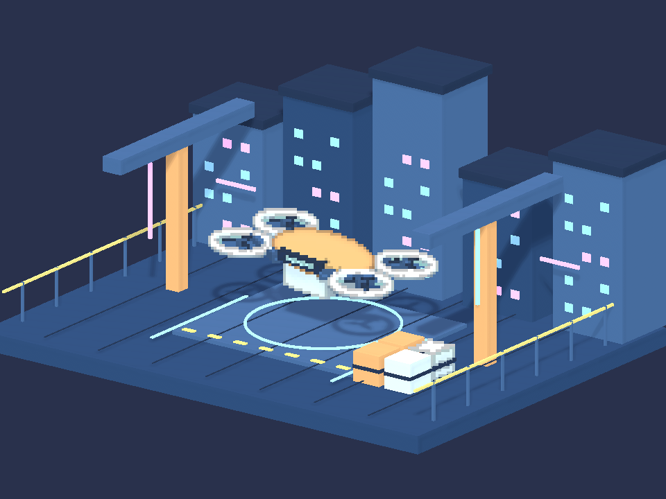
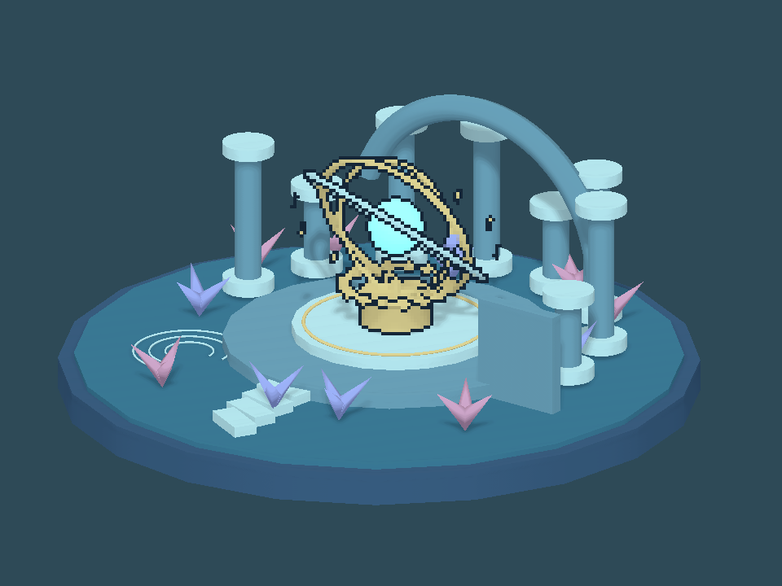

Tracefolio REPORTS & ISSUES
Tracefolio REPORTS & ISSUESPixel Camera — 기존 세 예제에 외곽/내부 아웃라인 분리
검증 대기Clockwork Garden·Neon Courier·Sunken Observatory의 단계 프리셋 9개에 짙은 실루엣/가림 경계와 옅은 내부 면 모서리를 적용했습니다. 기존 선택 물체 픽셀 처리와 장면 구성은 유지했습니다.
작업 결과
선택 물체 셰이더의 경계 분리를 확장하고 9프리셋·9언어 문서에 적용했습니다. 실제 Unity 전후 렌더에서 변경을 확인했으며 선택 대상 바깥 변화는 0픽셀이었습니다.
변경 내용
적용 내용
- Selected Objects에서 오브젝트 ID·깊이 경계는 어둡게, 노멀 면 모서리는 인접 면 명암색·방향광에 따라 혼합합니다. 기본 플래그가 꺼진 프리셋은 기존 처리 경로를 유지합니다.
- 세 예제의 9프리셋: 내부 모서리 분리 켬, 강도0.7, 한쪽 배치·반경1, 테마별 짙은 선색. 셀당 출력4픽셀과 선택/비선택 배경 구성을 유지합니다. 전체 배경까지 픽셀/외곽선 처리하는 예제로 변경하지 않았습니다.
- Unity 6000.0.83f1의 격리 preview에서 전역 렌더러 조회 누락을 확인하여 Editor에서 해당 카메라 씬의 렌더러도 수집하도록 보완했습니다.
01-ClockworkGarden


02-NeonCourier


03-SunkenObservatory


검증
- 실제 Unity 6000.0.83f1 Linear/Built-in 960×720 렌더. 3장면×3단계의 원래/수정 프리셋 18장 캡처 및 수정 후 동일 선색의 일반 경계 경로와 분리 경로를 별도 대조했습니다.
- 모든 단계의 전후 차이 12,582
17,280픽셀, 분리 처리 차이 7,2169,552픽셀. 투영된 선택 대상 경계 밖 전후 차이 0개. 실제 선택 렌더 경로 2루트/1버킷 확인. - 9개 프리셋 저장 읽기·선택 모드 유지 및 기존 씬 파일 SHA 보존 통과. 활성 씬·더티·선택·루트·preview 수 복원 통과.
- 7개 어셈블리 컴파일 및 최종 소스 해시 일치. 9언어 독립/제품/통합 문서 27개 생성 본문·장 이동·이미지/링크 검사 통과.
- 실제 단계별 렌더 검증 · 문서 검증 · 컴파일
- 초기 셰이더 구문 오류와 preview 조회 누락·투영비 검사 오류로 실패했던 결과는 로컬 QA 이력에 보존했습니다. 정상 GPU 렌더와 대상 밖 보존을 확인한 최종 회차만 통과했습니다.
- 교훈 검토: 기존 실행 검증·샘플 목적 보존·화면 조작 보류 규칙을 적용했습니다. 새 전역 규칙은 추가하지 않았습니다.
남은 사항
실제 네이티브 Play 키보드·Inspector 테마/9언어 레이아웃과 브라우저 표시는 화면 조작 보류로 미실행입니다. URP 실제 렌더와 선택 모드의 독립적인 광원 off/선 폭 픽셀 fixture는 이번 작업에서 미검증입니다. 전체 배경에는 새 외곽선을 추가하지 않았습니다.
작업 시간
- 제안 시간: 10~18분
- 실제로 완료된 시간: 시작 2026-11-05 21:54:16 KST. 구현·비화면 검증 종료 2026-11-05 22:10:27 KST (972초). 공개 배포 확인은 이후 수행하며 전체 소요 시간을 최종 채팅에 기록합니다.
- XERJ: 미사용 — Status에서 노드 미실행 확인. 대상 PixelCamera는 기존 인덱스 범위 밖으로 현재 소스 직접 읽기와 rg를 사용했습니다.